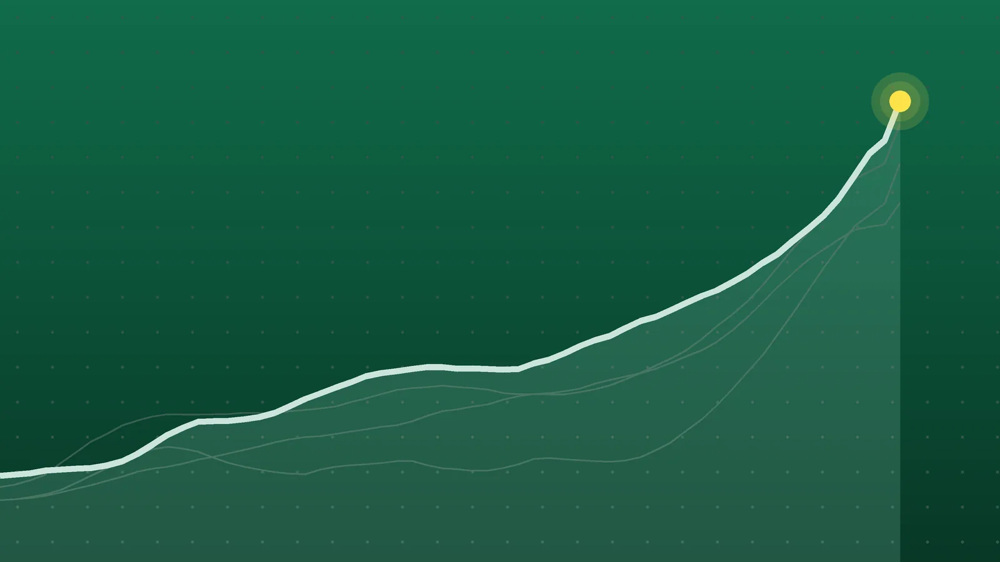

SportsExplainer
NHL Scores, Oct. 26: Matthews Hits 800 Points in Loss to Flames
A three-game Monday produced a franchise milestone in Calgary, a winning debut start in Edmonton and another road win for a Kings team that began 0-6.

Quick take
- Auston Matthews reached 800 career points in his 703rd game, the fastest in Maple Leafs history, but Calgary won 5-2 for its fourth straight victory.
- Michal Postava stopped all three shootout attempts and won his first NHL start as Detroit beat Edmonton 4-3.
- Connor McDavid’s assist stretched his season-opening point streak to 12 games; he leads the NHL with 34 points.
- Drew Doughty had a goal and two assists as Los Angeles won 6-3 at the Rangers for its third win in four games.
Why it's trending Monday’s three NHL games included Auston Matthews’ 800th point, a 12th straight game with a point for Connor McDavid and Calgary’s fourth straight win.
NHL scores for Oct. 26
Auston Matthews became the fastest player in Toronto Maple Leafs history to reach 800 career points, but the night belonged to Calgary. The Flames beat the Leafs 5-2 behind two goals from 20-year-old Matvei Gridin, extending their winning streak to four, NHL.com reported.
In Edmonton, goalie Michal Postava won his first NHL start by stopping all three Oilers shooters in a shootout, giving Detroit a 4-3 win. Connor McDavid still added an assist, keeping his season-opening point streak alive at 12 games.
All final scores
| Winner | Score | Loser | Note |
|---|---|---|---|
| Los Angeles Kings | 6-3 | New York Rangers | Doughty 1 goal, 2 assists; Panarin’s team-leading 7th goal |
| Calgary Flames | 5-2 | Toronto Maple Leafs | Gridin 2 goals, 1 assist; Matthews’ 800th point |
| Detroit Red Wings | 4-3 (SO) | Edmonton Oilers | Raymond lone shootout goal; Postava 25 saves |
All three scores appear in the KXEL scoreboard roundup and the NHL.com recaps linked below.
Flames 5, Maple Leafs 2
Matthews’ 800th point came on an assist on William Nylander’s goal early in the third period, which cut Calgary’s lead to 3-2. It was his 703rd game. The previous Leafs record belonged to Darryl Sittler, who needed 742, according to NHL.com. That’s 39 games faster. Calgary then put it away with two empty-net goals.
Gridin’s three-point night was the first of his career, and NHL.com says he’s the first Flames player age 20 or younger with three points in a game since Matthew Tkachuk in 2018. Devin Cooley made 26 saves. Sergei Bobrovsky stopped 29 shots in his 800th NHL start. Mikael Backlund’s goal was his 609th point for Calgary, tying Johnny Gaudreau for fifth in team history. NHL.com reported that Leafs forward Kirill Marchenko left in the second period with a lower-body injury and did not return.
Red Wings 4, Oilers 3 (SO)
Edmonton led 3-2 late in the third before Dylan Larkin tied it with the goalie pulled at 18:34, NHL.com reported. Postava then stopped Evan Bouchard with nine seconds left in overtime, and Lucas Raymond scored the only goal of the shootout. Postava, playing his second NHL game, is the third Detroit goalie in 25 years to win his first start, after Petr Mrazek and Jimmy Howard. Edmonton’s Zach Hyman left in the second period after a hit sent him into the glass.
Kings 6, Rangers 3
Los Angeles scored on its first two shots, a first for the club since February 2021, per NHL.com. Drew Doughty’s goal and two assists made for his first three-point night in 20 months, his last coming on Feb. 22, 2025, and moved him past Dustin Brown into seventh on the Kings’ all-time points list with 713. Rangers goalie James Reimer was pulled in his New York debut after allowing three goals on eight shots, AP reported. Adam Fox scored on the power play in his 500th game.
What it means
- Calgary (5-6-0) opened 1-6 and has now won four straight, sweeping a four-game homestand. Another win would get the Flames to .500.
- Los Angeles (3-5-2) began 0-6 and has won three of four since, all on the road.
- The Rangers (7-6-1) have lost three straight and suffered their first home loss after a 6-1-0 start at Madison Square Garden.
- Edmonton (8-2-2) has dropped two in a row. McDavid has 34 points (8 goals, 26 assists) and an assist in all 12 games, which ties the NHL record for a season-opening assist streak, NHL.com said.
- Toronto (7-5-2) saw a four-game winning streak end. Detroit improved to 5-4-3.
For Sunday’s games, see our Oct. 25 roundup.
What’s next
Tuesday, Oct. 27, has 11 games, all times ET, per ESPN:
- 7 p.m.: Columbus at Philadelphia
- 8 p.m.: Boston at Carolina; Los Angeles at Chicago; Montreal at St. Louis; N.Y. Islanders at Nashville; New Jersey at Dallas; Florida at Winnipeg
- 9 p.m.: Minnesota at Utah
- 10 p.m.: Ottawa at Vegas; Vancouver at Anaheim
- 10:30 p.m.: Buffalo visits San Jose
The Kings close their road trip in Chicago on the second night of a back-to-back. Boston at Carolina matches the teams ESPN lists atop the Atlantic and Metropolitan divisions.
Sources
- NHL.com Gridin scores twice, sparks Flames past Maple Leafs for fourth straight winOct. 27, 2026
- NHL.com Postava wins first NHL start, Red Wings rally past Oilers in shootoutOct. 27, 2026
- NHL.com Doughty has three points, Kings continue strong road trip with win against RangersOct. 27, 2026
- Associated Press via iNFOnews.ca NHL roundup: Kings' Doughty nets goal, two assists in 6-3 win over RangersOct. 26, 2026
- KXEL Scoreboard roundup -- 10/26/26Oct. 27, 2026
- Toronto Maple Leafs RECAP | Leafs @ Flames | Oct. 26, 2026Oct. 27, 2026
- ESPN NHL Tonight: Bruins-Canes highlights another massive night of gamesOct. 27, 2026
Keep reading

NHL Scores, Oct. 22: McDavid and Draisaitl Get 5 Points Each
NHL scores for Oct. 22, 2026: all 12 final results, including Edmonton’s shootout win over Carolina, Toronto’s late winner and Vancouver’s ninth loss in a row.

NHL Scores, Oct. 25: Canadiens Edge Jets in Heritage Classic
NHL scores for Oct. 25, 2026: all five finals, including Montreal’s 2-1 Heritage Classic win in Winnipeg and Quinn Hughes’ 500th point in a Wild win.

NHL Scores, Oct. 24: Nylander Hits 300 as Leafs Rout Oilers 7-2
NHL scores for Oct. 24, 2026: all 12 finals, including Toronto’s 7-2 win in Edmonton, Utah’s overtime comeback on Tampa Bay and Carolina’s 4-0 shutout.